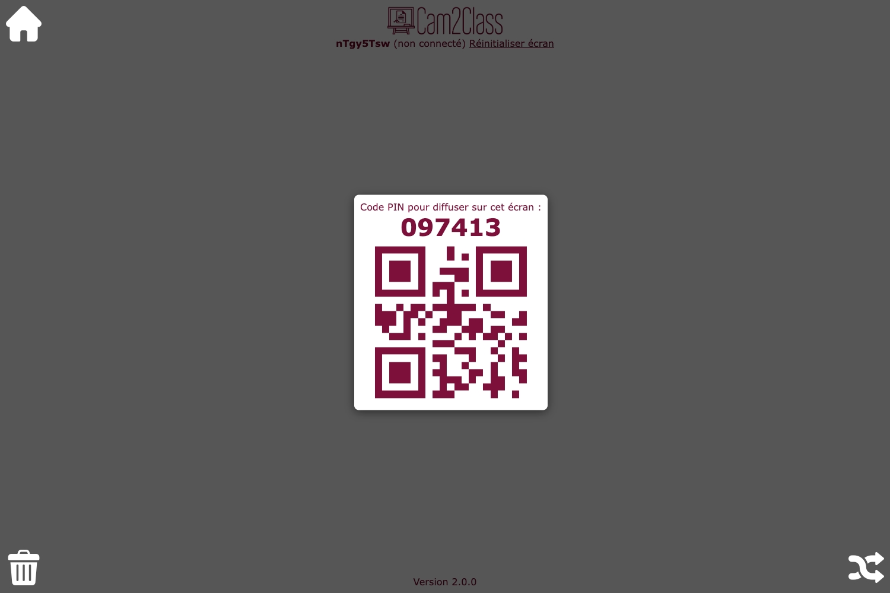

Guide d'utilisation
Cette application permet de relier deux appareils via internet de façon très simple grâce à un code PIN ou un QR-code.

Les images envoyées à l'écran ne sont stockées sur aucun serveur et elles transitent directement d'un appareil à l'autre. Aucune sauvegarde n'existe et elles deviennent inaccessibles lors du rechargement de la page écran. Si vous souhaitez réutiliser une image ultérieurement, pensez à la sauvegarder sur votre appareil.
Pour utiliser Cam2Class, vous devez d'abord ouvrir une page en tant qu'écran sur l'appareil de projection. Depuis la page d'accueil, il suffit de cliquer sur le bouton "Utiliser cet appareil comme écran". On arrive alors sur la page ci-dessous qui affiche le code PIN (et que le QR-code associé) à utiliser pour s'y connecter.
Sur cet écran, on retrouve trois boutons disposés dans les coins de la page :
Une fois qu'un appareil s'est connecté (en utilisant le code PIN ou le QR-code associé), l'écran est prêt à accueillir les images envoyées. Il est possible de déplacer les images sur l'écran (par glisser-déposer), d'agrandir ou de diminuer la taille (en utilisant le coin inférieur droit) ou de les supprimer (en cliquant sur le bouton en haut à droite). Chaque nouvelle image envoyée arrive au centre de l'écran, pas dessus toutes les autres. Chaque action sur une image la fait passer au premier plan par rapport aux autres.

Le lien "Réinitialiser l'écran" permet de déconnecter l'appareil d'envoi et de générer un nouveau code PIN d'accès (par exemple pour changer d'appareil d'envoi ou en cas de problème de connexion) sans supprimer les différentes images reçues de l'écran.
Une fois qu'un appareil a été configuré pour fonctionner en tant qu'écran, il est possible de le rejoindre de deux façons différentes. Il faut d'abord se rendre sur la page d'accueil de l'application puis cliquer sur le bouton "Utiliser cet appareil comme appareil-photo" (vous pourrez d'ailleurs ajouter la page correspondante sur votre écran d'accueil pour y revenir plus rapidement par la suite). Deux choix sont proposés pour vous connecter à l'écran :

Une fois connecté à l'écran (appareil situé à gauche de la capture ci-dessous), il est possible de prendre une photo directement depuis la page (en autorisant l'accès à la caméra puis en cliquant sur le bouton de prise de vue (en bas au centre) mais il est aussi possible de cliquer sur le bouton "Utiliser une autre photo" pour accéder à la galerie d'images de l'appareil (ou utiliser l'appareil photo natif).

Lorsque la photo est prise ou choisie (appareil situé à droite de la capture ci-dessus), il est possible de l'envoyer à l'écran (bouton de doite) ou tout simplement d'annuler cette prise de vue pour revenir à l'appareil photo. Lorsque la photo a été envoyée à l'écran, elle disparait pour laisser place de nouveau à l'appareil photo.
Lors du chargement de la page (par exemple suite à une actualisation), l'application essaie automatiquement de rejoindre l'écran précédemment utilisé s'il est encore disponible. Le lien "Réinitialiser caméra" permet de se déconnecter de l'écran actuel pour se connecter à un autre écran (cela peut-être aussi utile s'il y a un problème de liaison entre les deux appareils).